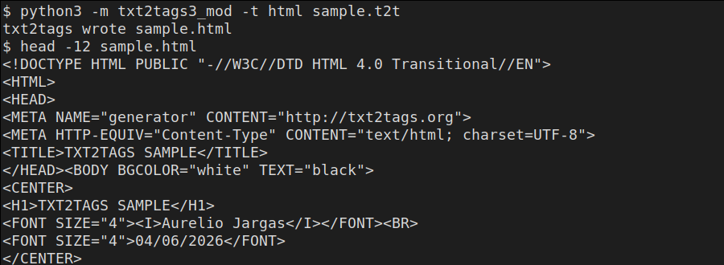

txt2tags-ports
Ports of txt2tags, the plain-text-to-40+-formats converter, to several languages: Python 3, Perl, Lua, Tcl, Rust and Go, on top of the original Python script.

txt2tags-it
A script for QOwnNotes, derived from the official markdown-it script: it adds txt2tags syntax on top of Markdown, both in the editor and in the preview pane.